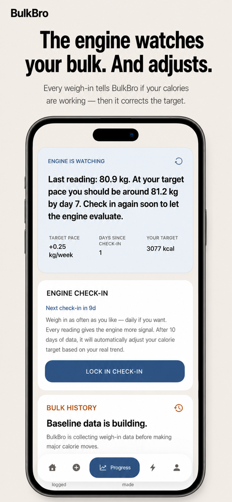
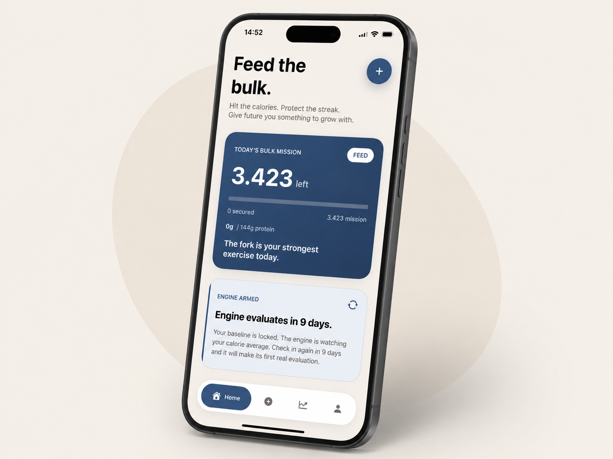
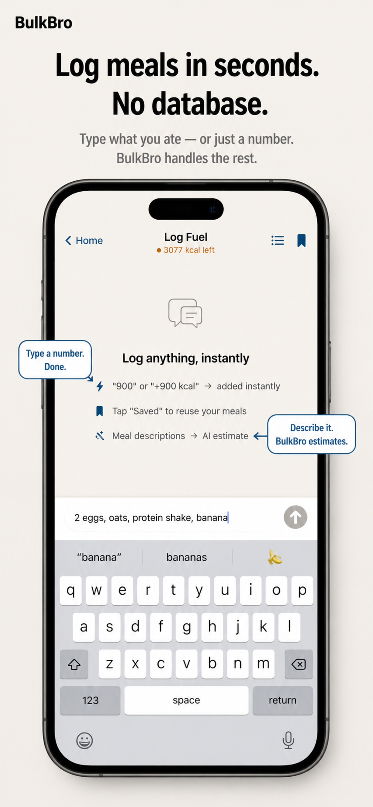
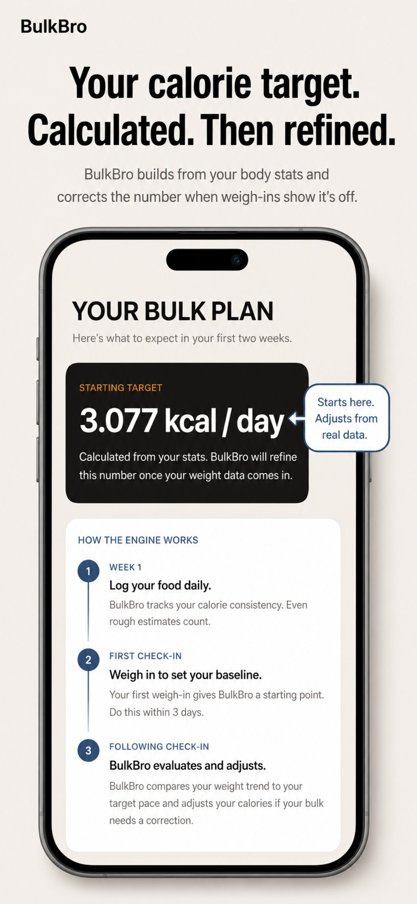

Stop guessing why your bulk isn’t working.
BulkBro tells you whether you’re eating enough, why your weight is not moving, and exactly what to change next.
Most calorie apps show what happened. BulkBro compares your food logs with your weigh-ins and turns the result into a clear next move.
Reach the target the engine is currently testing.

The more you log, the clearer the signal becomes.
You don’t need another place to count calories.
You need to know what the numbers mean. A hardgainer can log food for weeks and still have no idea whether the target is too low, the weekends are leaking calories, or the plan simply needs more time.
“I think I’m eating enough, but the scale isn’t moving.”
“Should I add 100 calories, 300 calories, or wait another week?”
“Am I actually inconsistent, or is my target wrong?”
“Every app tracks my food. None of them tells me what to do next.”
Log food. Weigh in. Get the answer.
Tracking is only the input. The product is the diagnosis.
Build the target
BulkBro creates a starting calorie target from your body, goal, activity, and chosen gain pace.
Watch the evidence
Your food logs, consistency, and weigh-ins show whether your body is responding to the plan.
Correct the plan
If your bulk is too slow or too fast, BulkBro explains why and updates the target.
Every screen answers one question.

What should I eat?
A starting target based on your current body and chosen pace.

Did I hit the target?
Fast food logging so the coach has evidence.
Is my body responding?
Weight trend and consistency reveal whether the plan is working.

What do I change?
One diagnosis, one reason, one next mission.
Calorie trackers report. BulkBro decides.
Normal calorie apps
- Show calories after you log them.
- Give you graphs and leave you to interpret them.
- Use a target that can stay wrong for weeks.
- Assume you know when to change the plan.
BulkBro
- Tests whether your target is actually working.
- Connects intake with weight response.
- Explains the biggest obstacle in plain English.
- Adjusts calories when the evidence says the target is wrong.
“I finally know if the problem is my calories, my consistency, or my target.”
Use this space for tester quotes once you have them. Until then, it communicates the exact belief the page should create.
You no longer have to bulk blind.
BulkBro does not promise magic weight gain. It promises something more useful: a clear feedback loop. Eat toward the target. Weigh in. Let the engine tell you whether the plan is working and what to change next.
Simple answers.
Is this just another calorie tracker?
No. Tracking is only the input. BulkBro uses food logs and weigh-ins to tell you whether the current bulk plan is working and what to change next.
How soon can it tell me something useful?
You can get a starting target immediately. The feedback gets stronger once you have enough food logs and weigh-ins for the app to see a real pattern.
What happens if I’m not gaining weight?
BulkBro looks at the evidence. If you are not hitting the target, it focuses on execution. If you are hitting the target and weight is still not moving, the target can be corrected.
Can it help if I gain too fast?
Yes. The same loop can catch when the pace is too aggressive and help reduce unnecessary fat gain.
Do I need to be a hardgainer?
No. BulkBro is built for bulking, especially for people who struggle to gain weight, but anyone trying to gain with more clarity can use it.
Find out if your bulk is actually working.
Start with a calorie target. Log your food. Weigh in. BulkBro will tell you what the numbers mean.